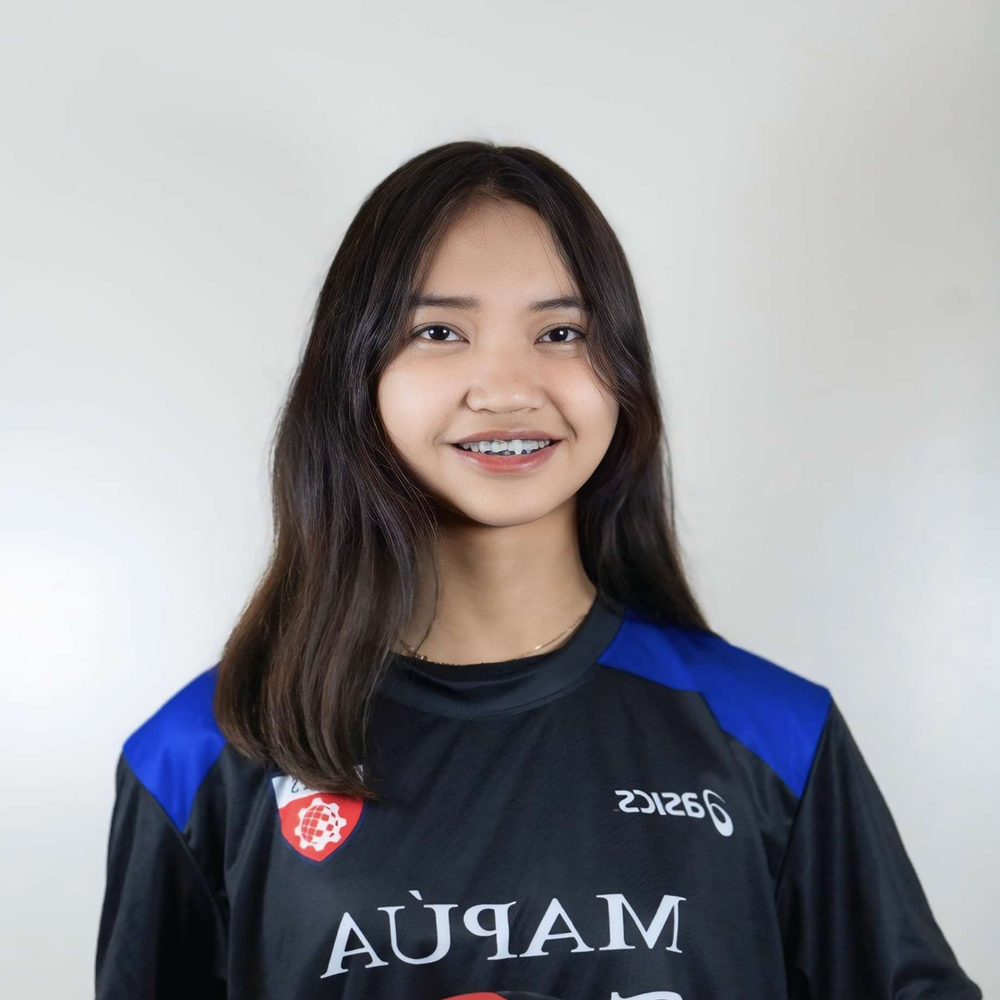
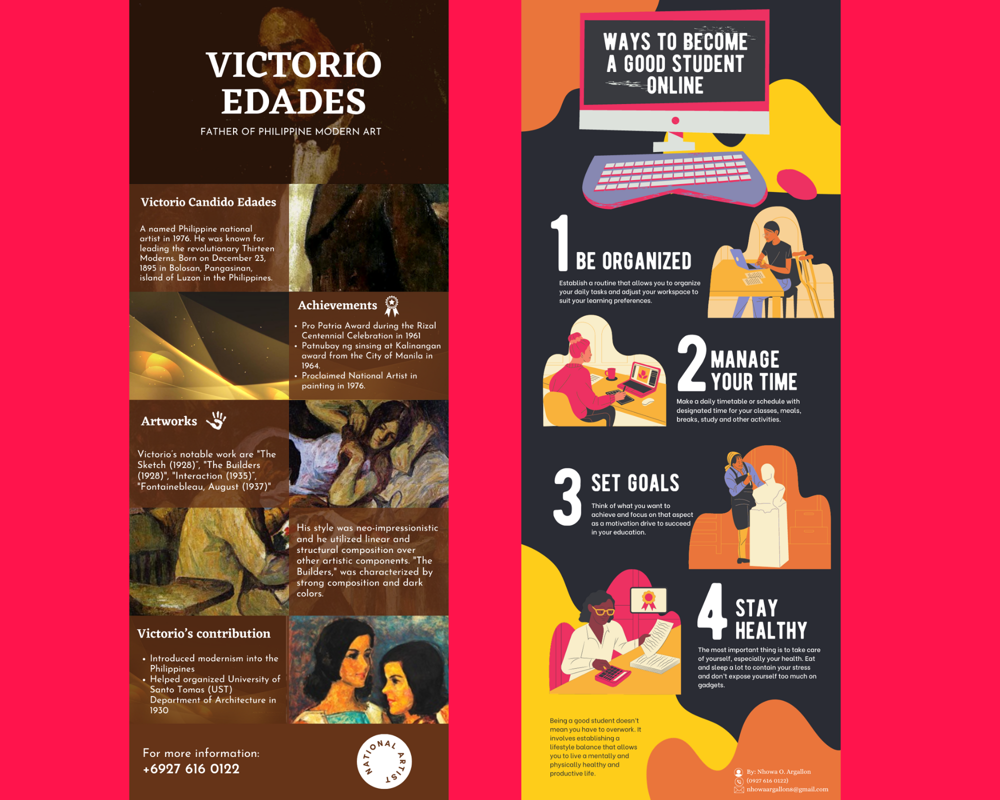
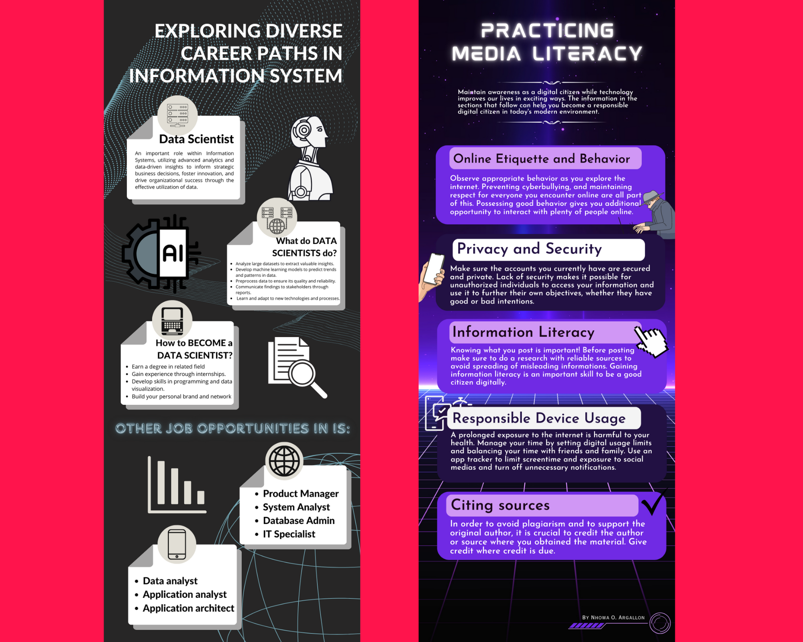
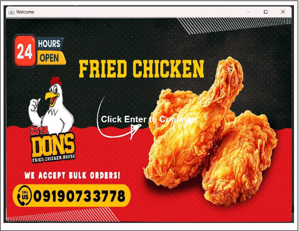
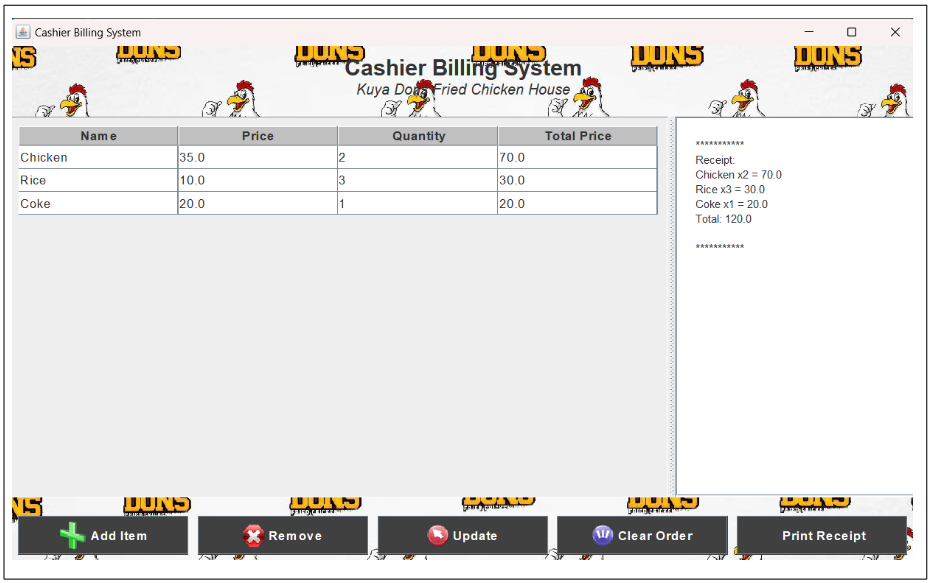
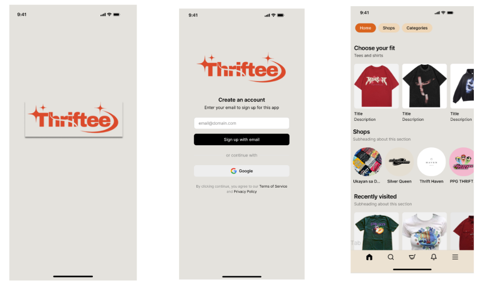
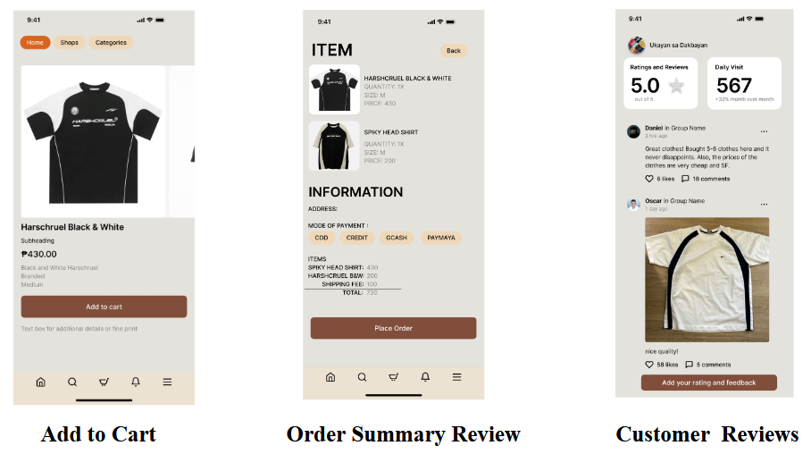
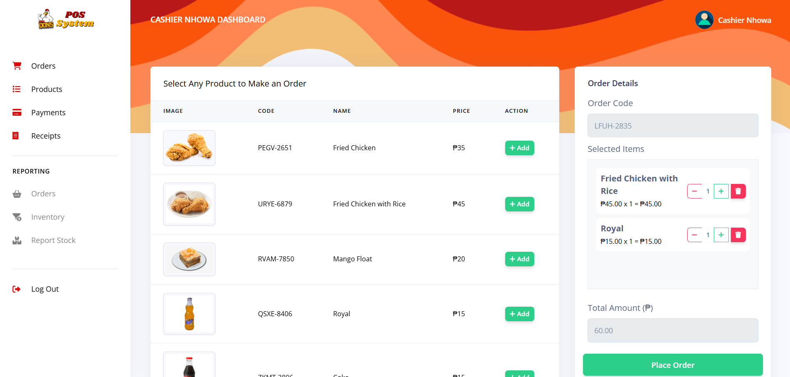
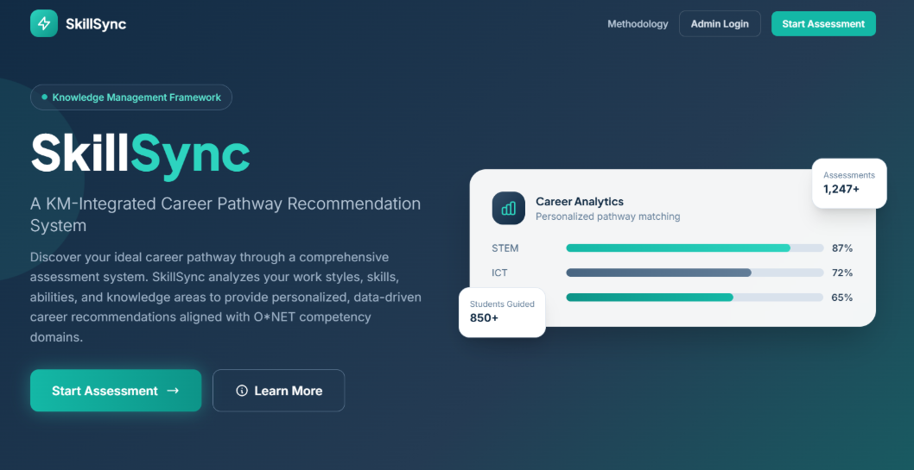

Hi
I'm Nhowa
Information Systems student at Mapúa MCM with knowledge
of various programming languages
and proficiency in
database management.

Information Systems student at Mapúa MCM with knowledge
of various programming languages
and proficiency in
database management.

I am a 20-year-old passionate about technology, coding, web development, and database management, continuously exploring and expanding my skills in the field of Information Systems. Currently pursuing a Bachelor of Science in Information Systems at Mapúa Malayan Colleges Mindanao, I am driven by curiosity and a strong interest in building efficient and innovative digital solutions. Beyond academics, I also enjoy video editing and graphic design, which allow me to combine creativity with technology. This website serves as a platform to showcase my projects, achievements, and personal journey in tech. I hope you find it insightful and enjoy exploring!


Click here to see description and project repository

Click here to see description and project repository

Click here to see description and project repository
Click here to see description and project repository
Click here to see description